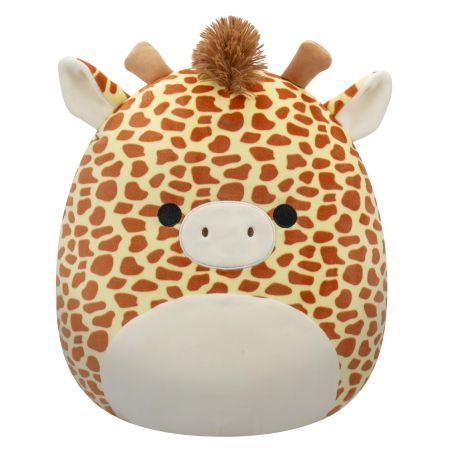

Gary the Giraffe
I chose this image because this is the one squishmallow I have. Apparently collectors consider him somewhat rare but I'm not into collections in general. The file type is .png which stands for Portable Nextwork Graphic. This file type supports millions of colors and uses lossless compression. Image Source
